G10 Godot 描画試作
2026-10-14 作成。ゲームの計算には触れない描画だけの試作。ボクセル地形(32px テクスチャ + 頂点 AO) + 自前のキットバッシュ生成(PBR 素材) + 陰影(方向光の影・SSAO・グロー・霧・ACES のトーンマップ)。実機のスクリーンショット。
00000. 階モジュール方式(現在の方針)
箱と円柱の合成では「根本的に駄目」との判断で、建物の作り方を階モジュールの積み重ねに改めた。階の概念は建物内工場と戦艦の内部にも使う。
| 項目 | 内容 |
|---|---|
| 単位 | 階モジュール = 床面積 W×D セル(3×3、2×2、5×5、4×6)、高さ 2 セル(設備 1 セルの室内と天井)。原点は床の中心。床板には 1 セルの内部格子(設備を置く目盛り)を刻む。 |
| 種類 | 基壇(列柱・引っ込んだロビー・入口・庇・危険帯)、機械(ルーバー・太い配管・タンク・橙の発光帯)、後退(広い床板・手すり・庭園の上に細い胴体。5×5 → 3×3、5×5 → 4×6、4×6 → 3×3、3×3 → 2×2)、格納庫(大扉の開口と橙の発光。ロボットの出撃口)、屋上(欄干・機械室・空調機・給水塔・アンテナと赤灯。機械室型・ヘリポート型・尖塔型・ボイラー型)、渡り廊下(双塔をつなぐ。長さ 3 と 4)。標準階は 6 系統: 事務所(窓の凹み・方立・庇・腰壁・背面の配管・通気口)、住居(窓とベランダ・手すり・鉢植え)、コンクリート(深い窓枠・各階の庇・灰色。「近未来の外観になる前の段階」の建物)、縦リブ(密な柱形と暖色の縦長窓。段状の冠の系統)、外骨格(X 支柱と水平トラス)、外部設備(露出配管・ダクト・設備塔の節・ガラスの昇降機)。合計 88 部品。 |
| 接続 | 上のモジュールの床面積は下のモジュールの上端面積と一致(後退階が切り替える)。階の境目は鋼の襟で継ぎ目を隠す。昇降機の芯は奥の角を全高で貫く。積み方の計画(Plan): 基壇 → 標準(6 階ごとに機械階) → 高さ 60% で後退 → 標準 → 屋上。双塔(Twin)は 3×3 の 2 塔と渡り廊下。一列の 16 様式のうち巨視的な形(後退・双塔・基壇と塔・段状・外骨格・外部設備)はこの積み方で再現し、傾斜と片持ち、先細りの三角塔は不採用。 |
| 切り取り表示 | 指定階より下の外装(名前が ext_ の部品)を隠し、床板と柱(int_)を残して内部に設備を置く。建物内工場の表示はこれで成立する。 |
| 部品の作り方 | Blender 4.5 LTS(D:\software\Blender_latest)の無人実行。箱の集合に面取り、窓はブーリアンで凹みを切り、奥にガラス、方立と庇を付ける。材質は名前だけ(M_Steel など)を持ち、Godot で PBR 材質に差し替える。生成: blender.exe -b -P tools/blender/make_modules.py -- game/assets/modules。 |
| 航空戦艦 | 船体部品を x 方向に並べる(Ship)。船体は甲板高 3 m × 甲板数(大型 4・小型 3。2026-10-15 に機体の寸法へ作り直し、下表)で、下に絞った船腹、装甲帯と鋲、舷窓、竜骨の発光。部品: 艦尾(推進器 3 基と安定翼)、中央(配管と通気)、浮揚機関(両舷の大型ポッドと下面の噴射口)、格納庫(両舷の大扉と上甲板の発艦口)、砲塔(3 連装)、艦橋(3 段の塔・翼・電探・檣)、艦首(平面でも立面でも先細る楔と衝角)。幅 7 と 5 の 2 種。空中に浮かべ、下面の光を地面に落とす。両甲板の内部格子に設備を置け、切り取り表示は区画単位で両甲板を見せる。 |
| 空中の接続(物流路) | 渡り廊下は長さ 2〜8 セル × 2 種(普通幅 = ガラスの箱、広幅 = 手すり・植栽・街灯の露天)。任意の 2 棟について、指定した階の向き合う面の取り付き点を床面積から求め(Connect)、長さに最も近い部品を伸縮して架け(Bridge)、中に 1 セルごとのベルト(広幅は往復 2 列)を通す。3 棟以上は空中の結節点(SkyNode: 台・手すり・街灯・小屋)から放射状に。自動接続(AutoConnect)は距離 13 以内の 2 棟を、他の建物の足元を横切らない経路に限り、1 棟あたり 2 本まで結ぶ。大都市では 85 棟に 14 本。 |
| 場面 | --scene modules: 奥に系統ごとの塔 6 棟(事務所・縦リブ・外骨格・外部設備・コンクリート・住居)、双塔、格納庫塔の切り取り表示、上空に航空戦艦 2 隻(大型は中央区画を切り取り表示)。大都市(--scene city)の建物は全て階モジュールに置き換え、上空に航空戦艦 2 隻。 |
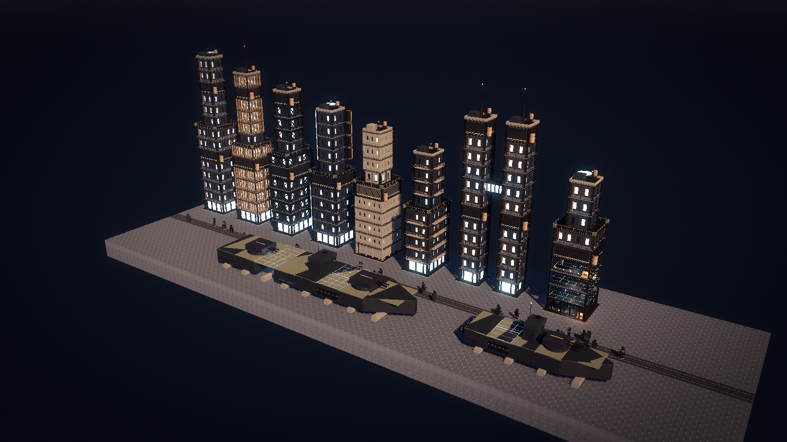
人型(機体と人間 2 種)は G11 に移した。
ミクロの地図と設備(2026-10-15)
設備を 1 セル角・高さ 1〜2 セルで作り直し(tools/blender/make_equipment.py → game/assets/equipment、配置は game/scripts/Equipment.cs)、ミクロの地図の 2 種(平地 1 ブロック 100x100、建物の 1 階 100x100)を --scene micro で描く。建物の階は、選んだ階より上を描かず、その階の外装・天井・襟板を外して設備を置く(実装では上の階を薄く残す)。
10 m 単位の床面積(2026-10-15 決定)。1 マス = 1 m のまま、床面積を 10x10〜100x100 m の正方形(10 m 刻み)にした。部品は make_modules.py big で各寸法 15 種 × 10 寸法 = 150 の階モジュールを追加生成(100x100 は 1 階あたり GLB 8〜10 MB)。長方形は作らない(2026-10-15 確定)。生成した階モジュール(合計 300 MB 超)は生成物として git に上げない(別環境では生成コマンドを一度実行する。2026-10-15 確定)。設備は同じ部品を MultiMesh にまとめて描く(Equipment.Place で溜めて Flush)。実測: ミクロの場面は設備 14,492 台を置いて構築 3.3 秒、大都市(5x5 街区)は設備 21,354 台 + 建物 25 棟で 4.9 秒(いずれも起動から画像保存まで)。
| 設備 | 高さ | 造形 |
|---|---|---|
| 炉 | 2 | 錆びた炉体に鋼の帯 2 本、前面に橙に光る炉口と格子、上に煙突(光る口)と配管、表示板。 |
| 組立機 | 2 | 塗装の箱に透明な覆い、覆いの中の腕、前面の窓と表示、危険帯。 |
| 採掘機 | 2 | 4 本脚の櫓、中央の円錐ドリルと襟、上の動力部(危険帯)、斜めの排出口(光る)、排気管。 |
| ベルト(直線・曲がり) | 0.3 | 低い枠と 2 本の側壁、暗い走行面、進行方向の光る矢印 3 組、両端のローラー。 |
| インサータ | 1 | 回転台(危険帯の環)と 2 節の腕、先の手(光る)、錘。 |
| 箱 | 1 | 塗装の箱に鋼の帯 2 本、蓋、光る札。 |
| タンク | 2 | 円筒に環 3 本、はしご、光る液面計、弁。 |
| 電柱 | 2 | コンクリートの台、柱、横木と光る碍子。 |
どの設備も鋼の縁と格子の台座を持ち、原点はセルの床の中心、正面(出口)は -Z。向きは 90 度単位。材質名は階モジュールと同じ(M_Steel など)で Godot が差し替える。
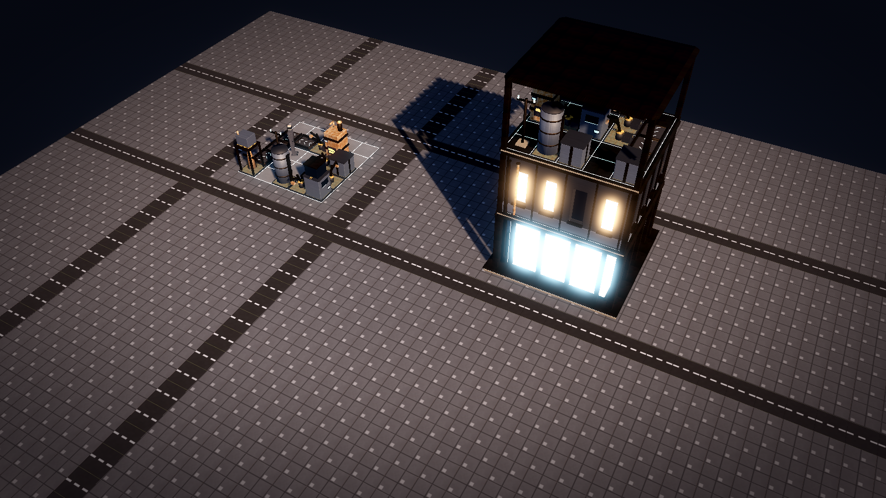
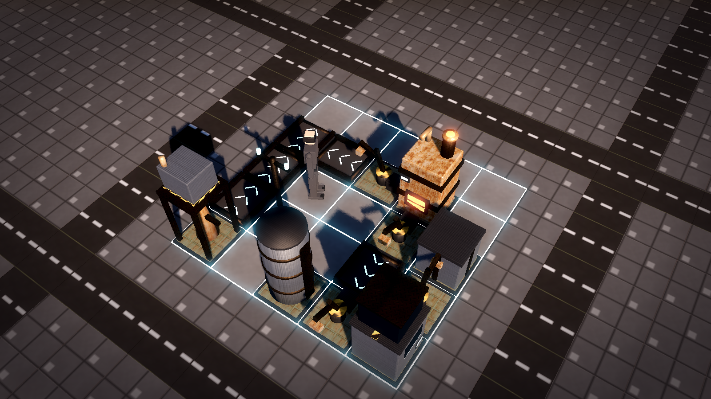
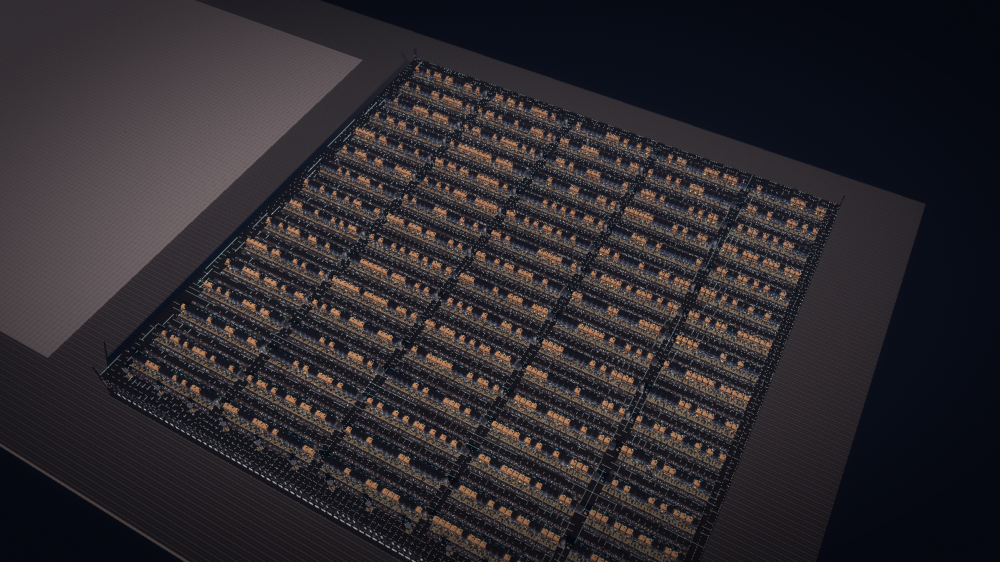
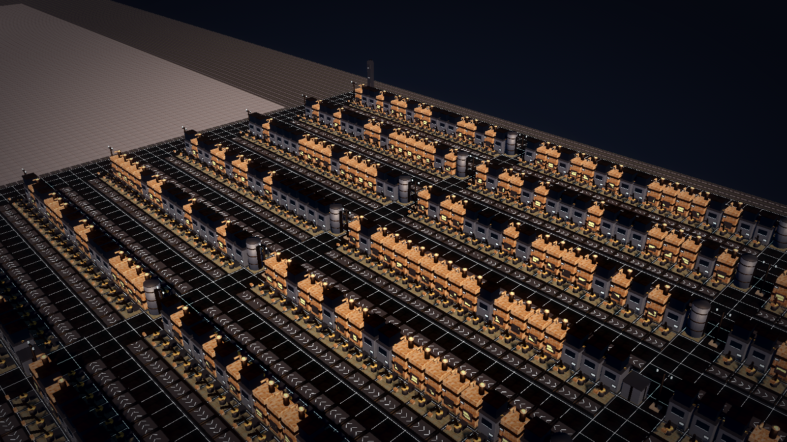
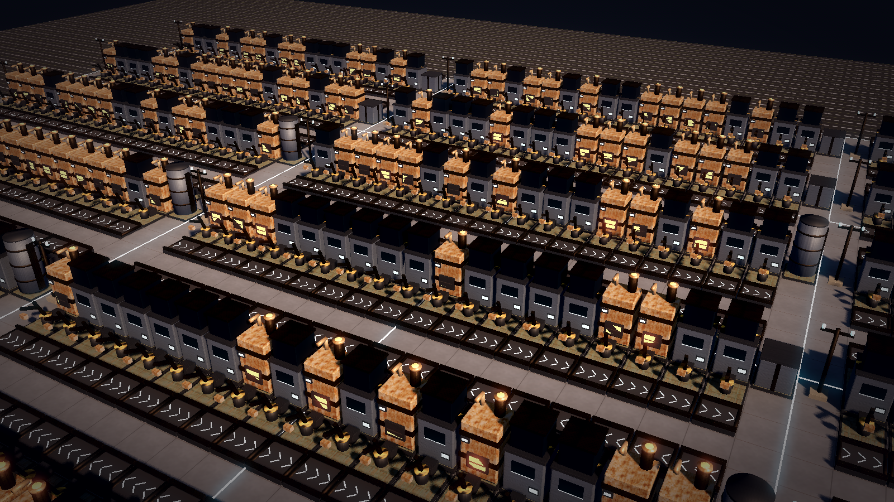
機体に合わせた格納庫と航空戦艦(2026-10-15)
機体 15〜17 m に合わせて作り直した。--scene ship で確認する。
| 部品 | 寸法 | 設計 |
|---|---|---|
機体格納庫 hangar_mech_12x12 | 12x12 m・6 階分(18 m)の 1 部品 | 階モジュールと同じ器(基壇 12x12 の上に載せ、屋上 12x12 で閉じる)。+Y 面に半開きの大扉(幅 8.4 m・高さ 16.5 m、左右 2 枚・リブ・危険帯・上の発光帯)、四隅の太い柱と 3 m ごとの側柱、階ごとの装甲帯。内部は 2 段(6 m・12 m)の作業台と手すり、天井クレーン(走行レール・梁・トロリー・フック)、壁の発光帯。部品は floors(階数)を持ち、積み上げ時にその分だけ高さを進める。 |
| 大型航空戦艦 | 幅 30 m・4 甲板(船体 12 m + 船腹 4 m)・全長 204 m | 艦尾 16・砲塔 16・浮揚 16・中央 16・格納庫 24 × 2・中央 16・艦橋 16・浮揚 16・砲塔 16・艦首 28。部品の大きさは幅 7 を基準に比例。 |
| 小型航空戦艦 | 幅 18 m・3 甲板(船体 9 m + 船腹 3 m)・全長 102 m | 艦尾 12・浮揚 12・中央 12・格納庫 18・艦橋 12・砲塔 12・艦首 24。 |
格納庫区画 ship_hangar_* | 高さ 19 m の格納庫 | 全甲板を抜き、船体の上に格納庫の膨らみ(リブ付き)を載せる。両舷に半開きの大扉(区画長の 6 割・高さ 18 m)、内部に格納庫の床・2 段の発光帯・両舷の通路・天井クレーン、上甲板に発艦口。切り取り表示では設備を置かず機体を入れる(ShipBayFloor で床の座標を取る)。 |
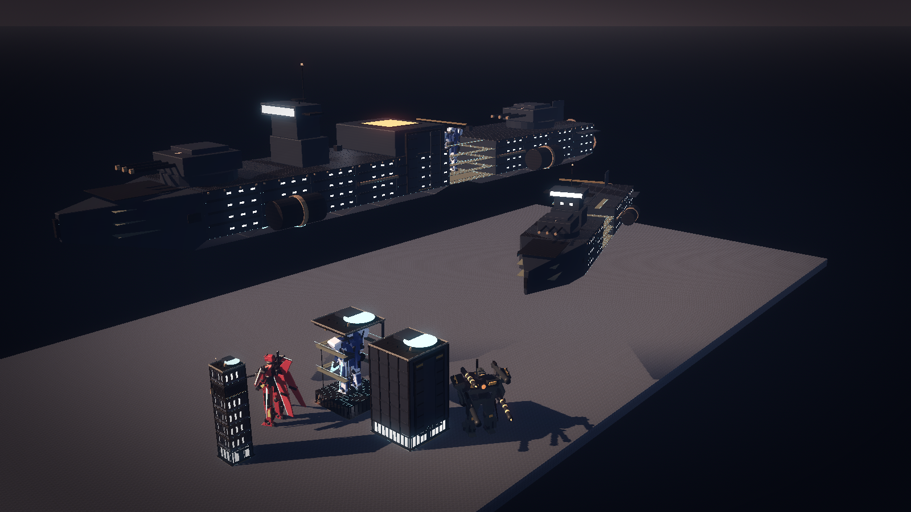
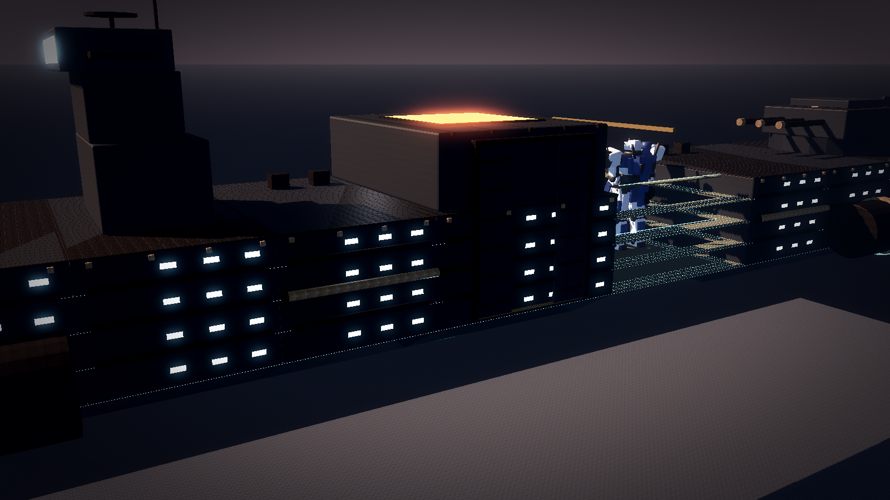
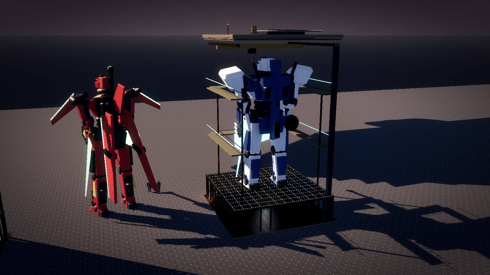
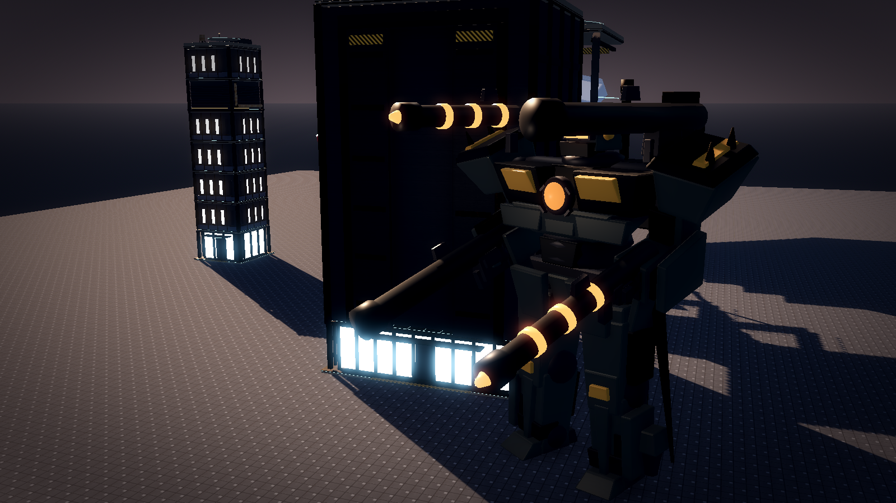
空中の接続の近景(縦リブの塔と外骨格の塔の間に広幅の渡り廊下、右に普通幅)。
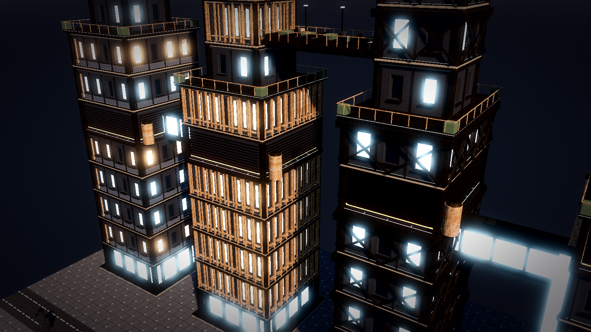
遠景の簡略版(2026-10-15)。階モジュールの GLB は 220 m より遠くでは隠し、代わりに階ごとの窓テクスチャの箱(住居 = 暖色、事務所 = 水色、コンクリート = 消灯)を描く(KitBash.LodFar、FloorModules.Build)。切り取り表示の階は常に部品で描く。大都市(25 街区・約 100 棟)の構築は 6.8 秒。
大都市(2026-10-15: 街区 100 m × 5 × 5、街路 16 m。床面積は地区で変える: 中心街 50〜100 m・12〜60 階、住宅 10〜30 m・2〜9 階を街区に複数棟、工場棟 40〜100 m で 1 階を開いて設備、軍区画に機体格納庫 4 棟、公園、太陽光。上空に航空戦艦 2 隻)。
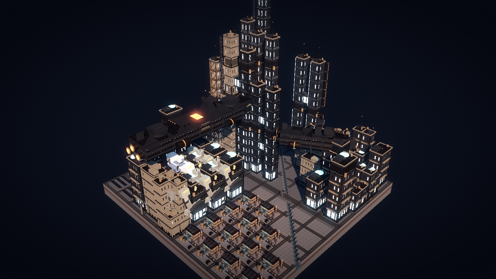
以下の節(16 様式・部品メッシュ方式・キットバッシュ)は経緯の記録で、建物は階モジュール方式に置き換えた。
0000. 名建築を参考にした建物 16 様式(廃止予定)
「ビルのモデリングを幾つか参考にして作って」との指示で、実在の名建築の造形を参考に 10 様式を部品メッシュ方式でレシピ化した(game/scripts/KitBashBuildings.cs)。判断用に 10 棟を一列に並べた場面(--scene buildings)を追加。中心街の大型区画は、メガタワー 3 棟のほか、ロフト様式 35%、名建築様式 39%、基本様式 26% の割合で選ぶ。
| 番号 | 様式 | 参考にした造形 | 構成 |
|---|---|---|---|
| 0 | 段状の冠 | アールデコの摩天楼(段状の後退と冠) | 基壇、4 段の後退(幅 1.0 / 0.78 / 0.6 / 0.44)、青銅色の縦の柱形、段の縁の装飾光、段状の冠と尖塔。 |
| 1 | 板状カーテンウォール | 列柱の上に引っ込んだロビーを持つ板状の塔 | 列柱の基壇、連続する青銅色の縦桟と各階の横桟、暗い機械階の帯、平らな屋根。 |
| 2 | 外骨格 | 吊り構造の塔(側面の双柱マストと水平トラス) | 開放された 1 階、両側面の双柱マスト、7 階ごとの水平トラスと X 支柱、吊られた階群、屋上の機械室。 |
| 3 | 外部設備 | 設備を外に出した塔(設備塔・露出配管・ガラスの昇降機) | 主塔の外に円筒の設備塔 3 本、露出した配管とダクト、発光するガラスの昇降機、連絡通路、屋上クレーン。 |
| 4 | 積層塔 | 末広がりの節を積んだ塔 | 3〜8 節の積層、各節の上部を広げた錐台と軒、軒の縁の暖色光、頂部の尖塔。 |
| 5 | 先細りの尖塔 | 中央コアと 3 枚の翼が螺旋状に後退する超高層 | 円筒のコア、3 方向の翼が段階的に短くなる後退、翼の上端の発光、長い尖塔。 |
| 6 | 双塔 | 八角の双塔と空中回廊 | 八角の 2 塔が 3 段で細くなり、中層の空中回廊と斜めの支柱、円錐の先端。 |
| 7 | 水平帯 | 水平連続窓の近代建築 | ガラスの帯と腰壁の帯の交互、各階の庇、屋上庭園と機械室。 |
| 8 | ブルータリズム | 板状棟と独立した設備塔を橋でつなぐ集合住宅 | コンクリートの板状棟と小さな窓、各階の庇、独立した設備塔と 3 階ごとの橋、屋上のボイラー室。 |
| 9 | 段状ピラミッド | SF のアーコロジー(段状の巨大構造物) | 6 段のテラス、窓帯、格納庫の開口(橙の光)、テラスの縁の発光と緑、中央の尖塔。 |
ロフト生成(様式 10〜15)。「直方体と円柱ベースしかない」との指摘で、任意の平面形を階ごとに拡縮・回転・移動しながら押し出すロフト生成(MeshParts.Loft、game/scripts/KitBashLoft.cs)を追加した。窓は曲面に沿う UV で貼り、階の帯は外側の薄いロフト、斜め格子は環の頂点どうしを結ぶ角材で作る。平面形は正多角形・角丸多角形・角丸矩形・楕円・レンズ形・星形。
| 番号 | 様式 | 平面形と変形 |
|---|---|---|
| 10 | ねじれ塔 | 角丸の四角形。1 階あたり 2 度回転し、上で 0.82 倍に細くなる。 |
| 11 | 先細りの三角塔 | 角を丸めた三角形。上で 0.35 倍まで細くなり、側面に斜め格子。 |
| 12 | レンズ形 | 2 つの円弧。中央で 1.2 倍に膨らみ、先端で絞る。斜め格子。 |
| 13 | 星形の段状塔 | 8 つ星。高さ 45% と 75% で 0.78 倍・0.56 倍に縮む。 |
| 14 | 傾斜と片持ち | 角丸の六角形。上に行くほど横へずれて傾き、上部に片持ちの箱と斜めの支柱。 |
| 15 | くびれた曲面殻 | 楕円。中央で 0.68 倍にくびれ、上で広がる。横の帯を 2 階ごとに。 |
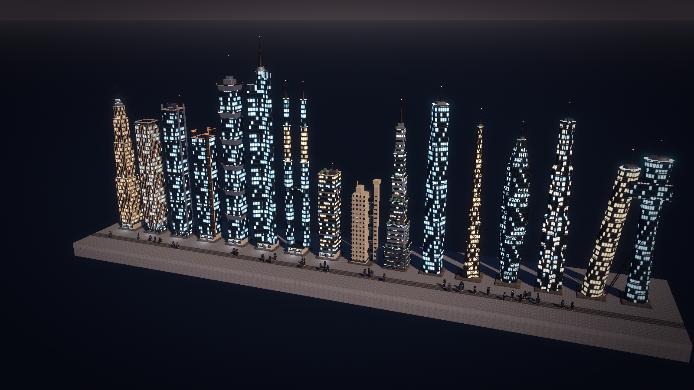
000. ポリゴン密度の引き上げ(部品メッシュ方式 + LOD)
「根本的にポリゴン数が少ない」との指摘で、作り方を箱と円柱の組み合わせから部品メッシュの大量配置に改めた。方針は二本立て: 主役の建物は高精細な既製キット(KitBash3D。無償の Neo City ミニキットは 9 棟で 1,290 万ポリゴン、FBX、商用可。取得はアカウント登録が要るためユーザーが行い、game/assets/kitbash3d/ に置く)、量産物は以下の部品メッシュ方式。「軽量」の方針は「ポリゴン数を抑える」から「描画回数と LOD で抑える」に改める。
| 部品 | 内容 |
|---|---|
| 面取り箱 | 全ての箱を 26 面の面取り付き立方体(MeshParts.ChamferBox)に置き換え。稜線が光を拾い、硬さが出る。 |
| 窓 1 区画(ベイ) | 方立・上枠・腰壁(張り出し)・奥まったガラス・庇・縦横の桟を持つ 3 表面のメッシュ(MeshParts.Bay)。点灯(暖色・水色)と消灯の 3 種を建物ごとに MultiMesh で並べる。1 区画 = 1 階 × 0.9m。 |
| 配管 | 16 分割の円筒、両端のフランジ、周上のボルト 6 本。 |
| 円柱 | 既定の分割を 12 から 24 へ。 |
| LOD | 建物ごとに、近距離(75m 以内)はベイの MultiMesh、遠距離は窓テクスチャの箱 1 個に切り替え(Godot の VisibilityRange、フェード付き)。大都市全体で数百万ポリゴンでも描画回数は建物あたり数回。 |
近景(--view close)。
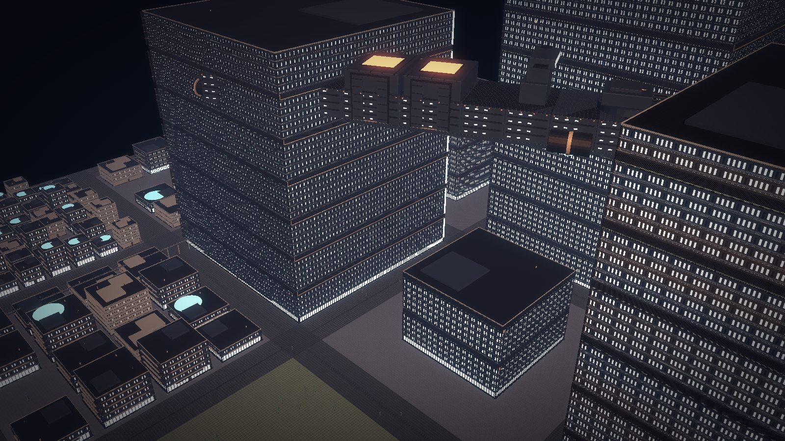
00. 物体の作り直し(キットバッシュ)
既製の低ポリゴンキットは「物体そのものがポップ」との指摘で廃止し、全物体を KitBash.cs のレシピで生成する形に切り替えた。
| 物 | 構成 |
|---|---|
| 炉 | コンクリートの台、錆びた筐体、黒い火口と橙の発光、煙突(環付き)、側面の配管とグリーブル、危険帯。 |
| 組立機 | 塗装鉄の筐体、四隅の鋼の柱、天板の回転部、水色の発光環と帯、通気口、配管、アンテナ。 |
| 採掘機 | 台座と危険帯、4 本柱のやぐらと筋交い、駆動部、軸と逆円錐の刃、排気管、排出口、赤の警告灯。 |
| ベルト | 鋼のレール、黒いゴムの帯、ローラー 3 本、進行方向の橙の印、積荷。 |
| 建物(SimCity 風) | 共通: 基壇、店舗階(発光帯・庇・入口)、角の鋼柱、階ごとの窓(点灯は白と水色、消灯は暗いガラス)、裏面の配管、屋上(欄干・機械室・空調機・給水塔・アンテナと赤灯、または尖塔、またはヘリポート)。様式 5 種: 基壇 + 段差の塔(12 階ごとに細くなる)、板状(各階の庇とベランダ)、ガラス張り(縦横の桟と冠の発光)、3 段の雛壇、八角の塔(環状の発光)。階数は 3 から 48(最高約 43 ブロック)。 |
| 工場棟 | 低く長い錆の箱、中段の塗装帯、屋上の通気と機器、扉と橙の発光帯、配管、グリーブル。 |
| 人型 | 小さな頭、装甲板の胴、円柱の関節、角張った四肢。ロボットは鋼の装甲と水色の目、市民は暗い作業服とバイザー付きの兜。 |
| 一括描画 | 同じ材質の箱(窓・庇・桟・グリーブル)は 1 つの MultiMesh にまとめて描く。大都市で約 10 万個の小部品でも描画は 1 材質 1 回。 |
| その他 | 居住モジュール、格納庫(大扉の発光)、砲塔、タンク(環とはしご)、煙突(火)、太陽光パネル、高架の柱と軌道と列車、針葉樹、岩、作物。 |
素材: Poly Haven CC0 の metal_plate・rusty_metal_02・painted_metal_shutter・concrete_wall_008・concrete_floor_painted・rusty_metal_grid(1K、アルベド・法線・粗さ)。tools/fetch_polyhaven.py で取得。
0. 色調(ハード SF)
初版の昼光とパステルは「ポップ過ぎる」との指摘で、次の調整を入れた。
| 項目 | 内容 |
|---|---|
| 光 | 低い夕刻の太陽(仰角 28 度、暖色)で長い影。環境光は冷たい青灰で弱め。空は暗い藍、地平は赤灰。 |
| 色調整 | 彩度 0.68、コントラスト 1.18、ACES トーンマップ。画面端に周辺減光。厚めの青灰の霧。 |
| 地形 | 草は枯れ色、土と石は暗く、水は深い色、道路は黒、広場は金属板(鋲入り)。tools/gen_textures.py の配色を変更。 |
| 物体 | 既製モデルの材質をキットごとに暗く冷たい色へ乗算(建物 0.48/0.52/0.60 など)。人物は小人型をやめ宇宙服の人型に統一。村は入植地(格納庫・通路モジュール・構造体・通信アンテナ・クレーター・岩)に差し替え。 |
| 発光 | 煙突の火、高層の航空障害灯、格納庫と列車の灯を発光材質 + グローで置き、一部に点光源。 |
1. 村(段階 1)
入植地(居住モジュール 3、格納庫、通信塔)、柵と作物、市民 4 人と自警団のロボット 2 体、工房棟と煙突、採掘機 → ベルト → 組立機 / 炉 → 箱とタンク、鋼の柱と格子床の上段に組立機とベルト、川と岸、鉱脈、針葉樹と岩。
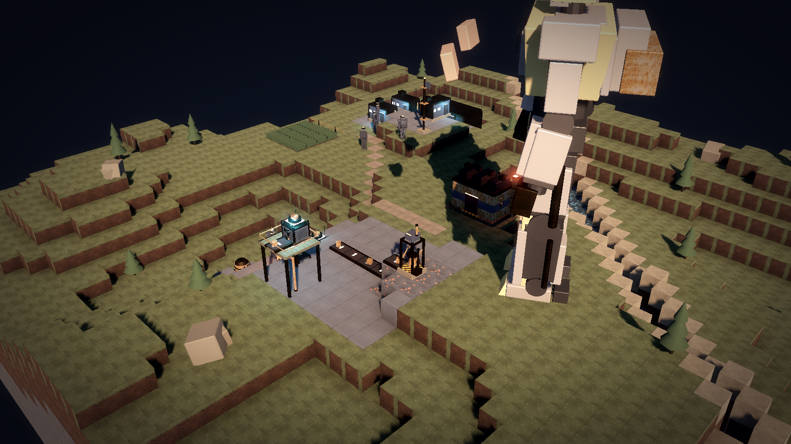
2. 大都市(段階 3〜4)
中心街の高層(8〜48 階、5 様式)、住宅街の中層(3〜9 階、板状と基壇型)、公園、工場地区(工場棟・煙突の火・タンク・箱・ベルト・組立機・ロボット)、練兵場(格納庫・砲塔・隊列のロボット)、太陽光パネル、高架の軌道と列車、7 マスごとの道路と 2 車線の大通り、川と橋、路上の市民とロボット。
3. 起動
cd E:\VSC_Git\GPS\game
..\.tools\Godot_v4.7.2-stable_mono_win64\Godot_v4.7.2-stable_mono_win64.exe --path . --resolution 1600x900 res://scenes/preview.tscn ++ --scene village
..\.tools\Godot_v4.7.2-stable_mono_win64\Godot_v4.7.2-stable_mono_win64.exe --path . --resolution 1600x900 res://scenes/preview.tscn ++ --scene city
(--screenshot <path> を付けると 40 フレーム後に保存して終了。--view close で近景、--scene buildings で建物 16 様式の一列、--scene modules で階モジュールの展示、--scene robots で機体 5 世代の一列、--pivot x,y,z と --dist d でカメラ指定)4. 未着手の物
| 物 | 方針 |
|---|---|
| インサータ | 台座 + 2 関節の腕 + 把持部をレシピで追加。 |
| ロボットの世代差 | 頭部・装甲・発光色を世代で差し替える引数を人型レシピに追加。 |
| 建物内の工場 | 建物の器(壁と階)をレシピ化し、内部に同じ設備レシピを置く。切り取り表示は壁を階ごとに非表示にして実現。 |
| 戦艦 | 船体を「階を持つ器」として同じ仕組みで組む。格納庫からロボットが出撃する(G2 第 5 節)。 |